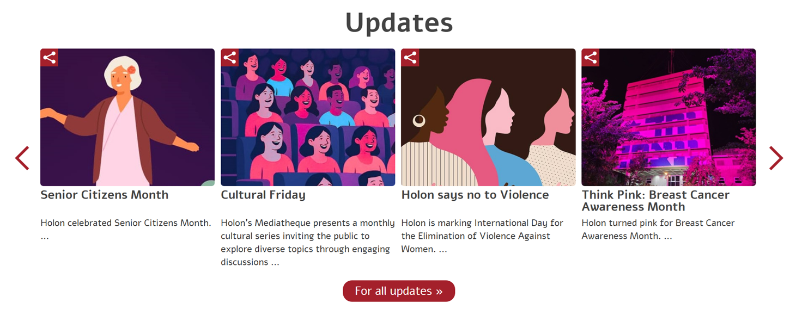
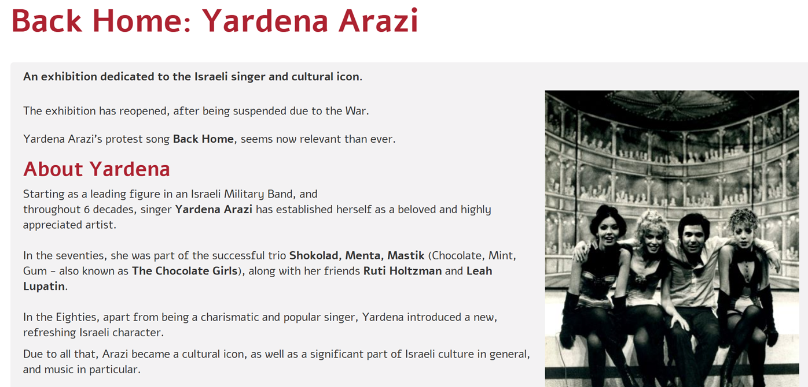
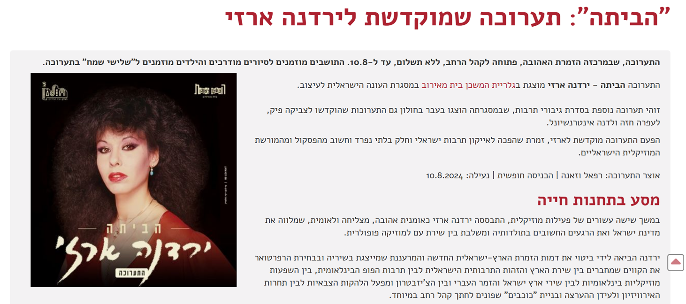
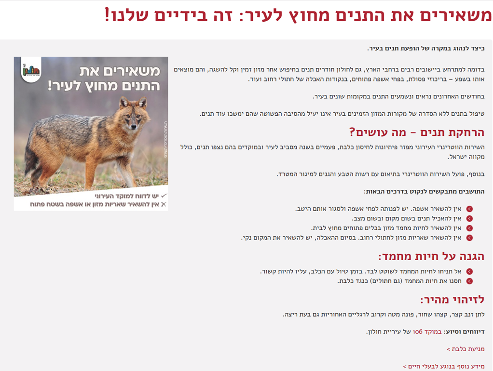
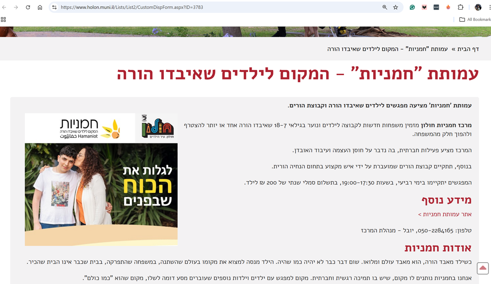

Website Manager & Content Editor
I manage and publish content for municipal and cultural websites, working across Hebrew and English. My work spans civic information, cultural exhibitions, and community programs for the City of Holon.
Portfolio
Selected Work — City of Holon
Holon Municipal Website
Managed and published content for the English-language homepage of Holon's official municipal website — covering city updates, cultural events, and civic information for an international audience.
Visit site →
Back Home: Yardena Arazi
Exhibition page for iconic Israeli singer and cultural icon Yardena Arazi — published on the English municipal site.

The Multidimensional Frida
International exhibition write-up for Frida Kahlo | The Life of an Icon, held in Holon.

Think Pink: Pnina Rosenblum
Cultural icon profile page for the Pink Future exhibition dedicated to Pnina Rosenblum.

יַרְדֵּנָה אֲרָזִי — "הביתה"
Hebrew version of the Yardena Arazi exhibition page — demonstrating bilingual content management across the same project.

Jackals in the City — Civic Awareness
Public information page on urban wildlife — civic and community content management for Holon residents.

Hamaniot — Community Support
Social services and community program page — supporting families and children who have lost a parent.
About Me
I am a Website Manager and Content Editor with hands-on experience managing content for the City of Holon's official municipal website — one of Israel's leading city portals.
My work includes publishing and editing content across cultural exhibitions, civic awareness campaigns, social services, and city updates — in both Hebrew and English.
I am detail-oriented, deadline-driven, and comfortable working across CMS platforms, coordinating content from multiple departments and adapting it for digital audiences.
Get in Touch
Available for part-time and freelance website management and content editing roles.
✉ Send me an email